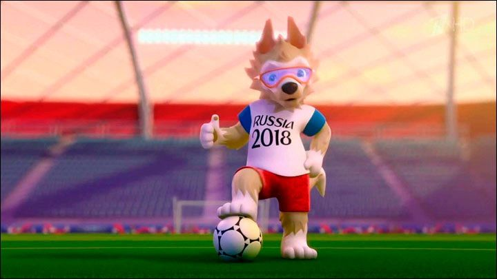
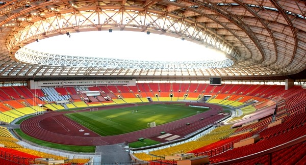

La mascota del mudial!

La mascota del mudial! Zabivaca significa en ruso "Pequeño Goleador" y es la mascota oficial de la Copa Mundial de Fútbol de 2018 que se celebrará en Rusia. Representado por un lobo antropomórfico con una camisa blanca y marrón con las palabras RUSIA 2018 con anteojos deportivos naranja. La combinación de su uniforme blanco, azul y rojo son los colores de la selección rusa. La estudiante diseñadora de la mascota es Ekaterina Bocharova, y fue seleccionada por votación en Internet.
Los resultados de la elección fueron anunciados el 22 de octubre de 2016 en el programa "Evening Urgant" en la primera cadena de televisión rusa. Lobo, llamado Zabivaka, obtuvo el 53% de los votos, superando al tigre (27%). El gato, con 20% de los votos, quedó en tercer lugar.
Estadio Deportivo del Complejo Olímpico Luzhnikí

El Gran Estadio Deportivo del Complejo Olímpico Luzhnikí es un estadio multiusos de Moscú, capital de Rusia. Su capacidad total es de 89 318 asientos, todos ellos cubiertos. El estadio es parte del Complejo Olímpico Luzhniki y se encuentra localizado en el barrio de Luzhnikí a unos cinco km al sudoeste del Kremlin. El nombre Luzhnikí deriva de los prados inundables en la curva del río Moscova, donde se construyó el estadio, que se traduce aproximadamente como «Los prados».
El balon oficial

A falta de poco menos de dos años para su comienzo, la FIFA se encargó de aumentar las expectativas por el evento y ya presentó a la máxima figura del certamen: la pelota.
Fabricada por uno de los sponsors oficiales del Mundial, Adidas, la Krasava será el balón oficial de la Copa Confederaciones 2017 y el posterior Mundial.
La pelota presenta un diseño con lineas irregulares y de color rojo, característico del país anfitrión, similar al de un rubí ruso, “metafóricamente, la joya del futbol”, expresó la FIFA en un comunicado.